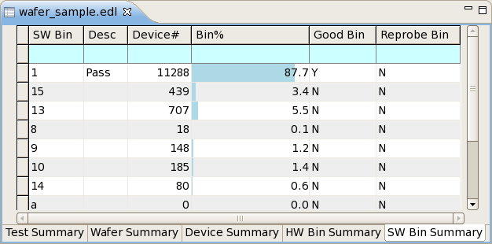

Software bin summary tab
The software bin summary tab of the summary view for a data store shows the consolidated results for all software bins in the data store, displaying basic statistical evaluations for each.
In addition to the columns describing each bin, a software bin summary tab has a shortcut menu. Both elements are described below.
Table
The table in a software bin summary tab display in each row a summary for a particular bin. Clicking any field in a row selects the entire row (for example, for copying it).
The topmost row in the table (with a cyan background) is the table filter that lets you restrict which rows are displayed in the table by entering conditions. See Table filter for details.
A software bin summary tab can display these columns:
- SW Bin: The number of the software bin.
- Desc: The description string of the software bin (if it has been specified).
- Site: The number of the tested site.
This column is displayed only when the hardware bin summary is grouped by site.
- Site%: The percentage of devices tested in the site that have been
put into this bin.
This column is displayed only when the hardware bin summary is grouped by site.
- Device#: The number of devices that have been put into this bin.
- Bin%: The percentage of devices that have been put into this bin.
(This is the value from the Device# column divided by the total number
of tested devices.)
This percentage is also shown graphically in the cell by a horizontal blue bar. For example, if a quarter of all tested devices have been put into this bin, the left quarter of the cell is blue and the rest has a normal background.
- Good Bin: Whether this bin is a good bin (Y) or bad bin (N).
- Reprobe Bin: Whether this bin is a reprobe bin (Y) or not (N).
Which columns are displayed and the order in which they are displayed can be set in the preferences.
If the bin summary tab is part of a correlation view, additional columns are displayed. See Correlation data store structure for more information.
Clicking a column title sort the table by this column in ascending order (rows with smaller values come first). This is indicated by a triangle . Clicking again sorts the table by the column in descending order, which is indicated by an upside-down triangle . Clicking again unsorts the table. (The rows are displayed in the order in which they occur in the data store.)
Shortcut menu
The shortcut menu of a hardware bin summary tab contains these commands:
- Refresh: Updates the system data log stream
display with the latest logged data when it is paused (see below), but does not turn on
automatic updating again, like Resume does.
This command is available only when the system data log stream is displayed in the tab.
- Pause: Stops automatic updating of tables
displaying the system data log stream.
This command is available only when the system data log stream is displayed in the tab.
- Resume: Restarts automatic updating of the
system data log stream.
This command is available only when the system data log stream is displayed in the tab.
- Clear: Removes all current entries from the system data log
stream display in the Integrated Result Tool and clears the system event stream.
This command is available only when the system data log stream is displayed in the tab.
- Save and Clear: Displays a standard Save dialog in which you
can save the current system event stream as an EDL file. After you have saved the file, all
current entries from the system data log stream display in the Integrated Result Tool are
removed and the system event stream is cleared.
This command is available only when the system data log stream is displayed in the tab.
- Exclude: This submenu lets you specify which records to
exclude from the evaluation of the data store and display in the summary tabs. Records that you
exclude in this tab are also excluded in other tabs.
- Selection: Excludes the tests summarized in the selected rows.
- Other: Excludes all tests except those summarized in the selected rows.
- None: No test are excluded. If there are any exclusions currently in effect, they are ended.
- Filter: This submenu contains the Show Similar
command, which lets you restrict the display in the tab to only those bins that have the same
software bin number as the selected bin.
Note that this command is a shortcut for entering the software bin number in the table filter row at the top of the table. To show all rows again, click at the very left of the table filter row (which clears all filters).
- Width: This submenu includes the Autofit command that lets you make each column just wide enough to show all of its contents.
- Group By: This Site command in this
submenu lets you group the displayed summaries by site.
This means that, instead of displaying one row per bin, SmarTest displays one row per site for each bin. It also displays the Site column (see above).
If the display is already grouped by site, choosing again removes the grouping.
- Copy: Copies the selected rows to the clipboard as tab-separated text.
- Alerts: Opens the Alerts preference page.
- Preferences: Opens the SW Bin Summary preference page.
Example
Depending on your preference settings, the bin summary could look like this:

Functional changes
- Introduced in SmarTest 7.2.0
- SmarTest 7.2.1: Renamed some columns.
- SmarTest 7.2.2: Added several shortcut menu commands.